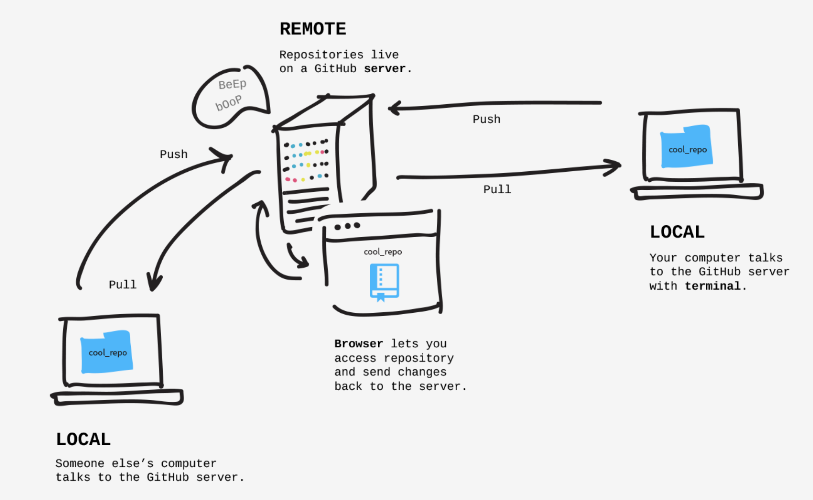

class: center, middle # WORKSHOP GIT ### Git collaborating: 18-09 --- # Agenda 1. What you will learn today 1. GitHub & Settings 1. Git Collaborating - On the same branches - On the different branches 1. Git Flow & GitHub Actions --- # What you will learn today 1. Know how to use Git to collaborate with team members to manage and share the source code 1. Know the concept of Git Flow and how to use it with Github Actions --- # GitHub & Setting (1) Internet hosting service for software development and version control using Git. It provides the distributed version control of Git, plus: - Access control - Bug tracking - Software feature requests 🟢 - Task management - Continuous integration 🟢 - Wikis for every project --- # GitHub & Setting (2) ### Create personal access token 1. From user menu, click 'Settings' 2. From sidebar menu, click 'Developer settings' 3. From sidebar menu, click 'Personal access tokens' 4. Click 'Generate new token' button 5. Create new-token as follow ``` Note: workshop-2022 Expiration: 7 days Select scopes: repo, workflow (at least) ``` 6. Copy generated token to use later --- # GitHub & Setting (3) ### Create a new repository Access https://github.com/new Create a new repository on the command line: ``` echo "# test" >> README.md git init git add README.md git commit -m "first commit" git branch -M main git remote add origin https://[TOKEN]@github.com/[USER]/[REPO] git push -u origin main ``` --- # Git Collaborating Git commands will be used: ``` git add - ☑️ git commit - ☑️ git switch/checkout/branch - ☑️ git fetch git log (git log --all --decorate --oneline --graph) git pull git push git rebase git merge ``` ---  --- # On the same branches [git-collaborating_1](https://github.com/atwarevn/git-workshop-2022/tree/main/git-collaborating_1.md) --- # On the different branches [git-collaborating_2](https://github.com/atwarevn/git-workshop-2022/tree/main/git-collaborating_2.md) --- # Git Flow & GitHub Actions ### Git Flow in the real world [Git Flow](https://github.com/atwarevn/git-workshop-2022/tree/main/img/git-model@2x.png) Branches - main - develop - dev-release - stg-release - prd-release - feature/\*\* --- class: center, middle # Thank you very much